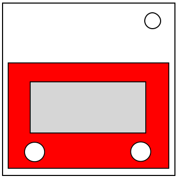

A Respeito da Lousa Mágica
“Contanto que você esteja aprendendo, não está explodindo.” - Bob Ross
Este módulo contém uma lousa mágica na qual você pode desenhar.
Apenas desenhe até terminar. (Você pode desenhar mais depois disso, também.)
Você pode chacoalhar a bomba para apagar os seus desenhos.